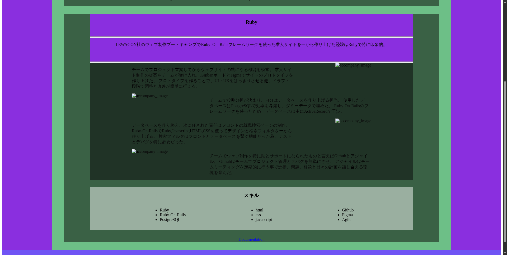

サイバーセキュリティに興味を持ち初め、暗号化技術について学びたくなり、Pythonで簡単な暗号化当てゲームを作った事はPythonで印象的。 その他、定期的にCodeWarsの問題をPythonで解く事で、Python知識を鈍らせる事を防ぎ、コード管理の効率を上げる「パッケージとModularisation」の実用経験を身につける事が出来た。
暗号化技術を学び、Pythonを実用出来る、Python暗号化当てゲームを作ると決める。 コーディングに取り掛かる前に下調べで暗号化の知識とPythonで使える「Cryptograph」パッケージを見つけた。 最終目標から重要点を見出し、プランを立てる事でコーディングの効率を上げることは出来た。

部分的にコードをテストし、デバグをしながら進め事で、コードを修正し正常性確認を検証できる。 CryptographパッケージのFernet暗号化の使用に発生した問題解決するのに、 下調べの時に見つけたCryptographの正式情報ページを参照する事で問題を解決出来た。
CodeWarsサイトでコーディング問題に挑戦する事でPythonのデータ操作の基礎、制御構造に磨きを上げる事は出来た。 問題分析と解決の能力にも磨きを上げる事で、プランを立てる経験を積む事が出来た。
CodeWars問題に使うテスト用データを毎回入力する事の効率が悪かった為、最適化出来ないか試みる。 プロジェクトのコードを分割する事でコード管理が簡単になる他、エラーを特定し解決しやすくなった。 再利用可能なコードをFunctionとして外部のファイルに保存することで色んなプロジェクトにインポーして利用可能になる。 色んなランダムなデータ（テキスト、数字、リスト）を生成するコードを外部ファイルに保存する事でパッケージみたいに再利用が可能になった。